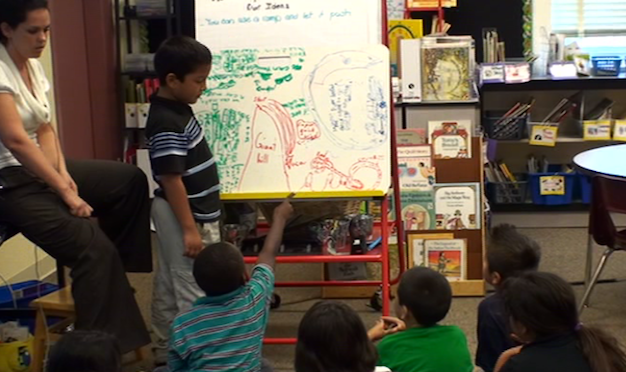

Responsive teaching places unique demands on curriculum. While the teacher may start with a set of goals and a sense of where things might go, the ‘enacted’ curriculum emerges from the ideas students suggest and the next move decisions the teacher makes based on those ideas. At the start of an implementation of toy cars, students discuss various ways to make a toy car move. Over several subsequent class periods, this initial seeding of student ideas leads to discussions about motion, forces, and energy, driven by the students’ substantive engagement in scientific inquiry. In the Responsive Teaching Project, we have closely monitored several implementations of toy cars, and have found that, despite the contextual nature of the enacted curricula, students in all the classes share many common ideas, and they engage in similar kinds of classroom activity (although usually in different sequences). In this section of the website, we describe several such implementations, focusing in particular on the students’ ideas as they emerge and the next move decisions that the teachers make. In our responsive teaching in science project, toy cars was implemented in second-, third-, and fourth-grade classrooms.

A student in the class asks a question about an idea the presenting student has about a car moving along a series of hills and ramps, while the teacher (Sharon) looks on from the left.